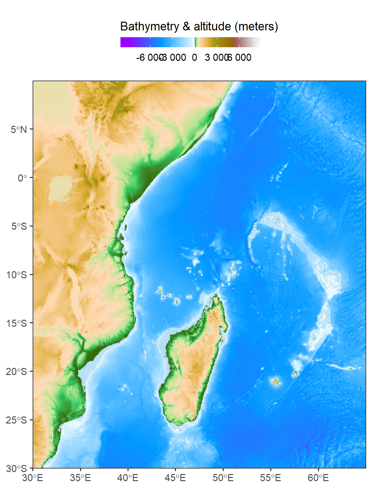

my_matrix <- matrix(
c(1, 2, 3, 4, 5, 6, 7, 8, 9),
nrow = 3,
ncol = 3
)Introduction to Matrices and rasters
In this chapter, our main objectives are to delve into the realm of spatial data analysis by working with raster data. We will introduce you to various packages beyond “base R” that are specifically designed for handling spatial data. We will also explore the fundamental data structures for spatial data analysis, including matrix and array, as well as their spatial counterparts, namely the stars class for single-band rasters and multi-band rasters.
Throughout this chapter, we will learn how to access and manipulate cell values and other properties of rasters. Additionally, we will gain insights into reading and writing raster data, which are essential skills for working with spatial data.
To achieve these aims, we will be utilizing the following R packages:
terra: This package provides a versatile and efficient framework for working with spatial data, including raster data. It offers a wide range of functionalities for data manipulation, analysis, and visualization.tidyterra: An extension of thetidyverseecosystem,tidyterracomplements theterrapackage by providing a set of tidyverse-style functions and workflows for working with spatial data in a tidy and consistent manner.raster: Therasterpackage is a well-established package for handling raster data in R. It offers a comprehensive set of functions for reading, writing, processing, and analyzing raster datasets.sf: Thesfpackage is focused on handling vector data, providing classes and functions for working with spatial geometries. However, it also includes support for working with raster data, making it a valuable package for spatial data analysis.
By mastering these packages and their functionalities, you will gain the skills and tools necessary to explore, analyze, and visualize spatial data effectively.
Matrices
Matrices are a fundamental data structure in R that allows you to store and manipulate data in a two-dimensional format. They consist of rows and columns, where each element is identified by its row and column index. Matrices are useful for organizing and working with structured data, such as numerical or categorical values.
Matrices are useful for performing various mathematical operations, such as matrix multiplication, addition, and transposition. They are also commonly used in statistical analysis and data manipulation tasks. R provides many built-in functions and operators for working with matrices, allowing you to perform calculations, subsetting, and other operations efficiently.
What is a matrix?
A matrix is a two-dimensional data structure in R that consists of rows and columns. It is similar to a table or a spreadsheet where each element in the matrix is identified by its row and column index. Matrices in R can contain elements of the same data type, such as numeric values, character strings, or logical values.
Unlike a data.frame, the number of values in all columns of a matrix is equal, and the same can be said about the rows. It is important to know how to work with matrices because it is a commonly used data structure, with many uses in data processing and analysis, including spatial data. For example, many R function accept a matrix as an argument, or return a matrix as a returned object. Moreover, a matrix is used to store raster object.
Creating a matrix
In R, you can create a matrix using the matrix() function. The function takes in a vector of values and parameters specifying the number of rows and columns. A matrix function accepts the following arguments:
data—A vector of the values to fill into the matrixnrow—The number of rowsncol—The number of columnsbyrow—Whether the matrix is filled by column (FALSE, the default) or by row (TRUE)
For example, to create a 3x3 matrix with numeric values, you can use the following code:
This will create a matrix my_matrix with 3 rows and 3 columns, where the elements are filled in column-wise order.
[,1] [,2] [,3]
[1,] 1 4 7
[2,] 2 5 8
[3,] 3 6 9Note that the class of matrix objects is a vector of length two, with the values "matrix" and "array":
my_matrix |>
class()[1] "matrix" "array" This implies the fact that the matrix class inherits from the more general array class. The nrow and ncol parameters determine the number of rows and number of columns, respectively. When only one of them is specified, the other is automatically determined based on the length of the data vector:
my_matrix <- matrix(
c(1, 2, 3, 4, 5, 6, 7, 8, 9),
ncol = 3
)
my_matrix [,1] [,2] [,3]
[1,] 1 4 7
[2,] 2 5 8
[3,] 3 6 9Example 1 What do you think will happen when we try to create a matrix with less, or more, data values than matrix size nrow*ncol? Run the following expressions to find out.
Solution.
matrix(12:1, ncol = 4, nrow = 4)Warning in matrix(12:1, ncol = 4, nrow = 4): data length differs from size of
matrix: [12 != 4 x 4] [,1] [,2] [,3] [,4]
[1,] 12 8 4 12
[2,] 11 7 3 11
[3,] 10 6 2 10
[4,] 9 5 1 9Example 2 Create a 3×33×3 matrix where all values are 1/91/9.
Finally, the byrow parameter determines the direction of filling the matrix with data values. In both cases the filling starts from the top-left corner (i.e., row 1, column 1), however with byrow=FALSE the matrix is filled one column at a time (the default), while with byrow=TRUE the matrix is filled one row at a time. For example:
matrix(1:12, nrow = 3) [,1] [,2] [,3] [,4]
[1,] 1 4 7 10
[2,] 2 5 8 11
[3,] 3 6 9 12matrix properties
In R, a matrix is a two-dimensional data structure that contains elements of the same data type organized in rows and columns. Matrices are useful for various mathematical and statistical operations.
Dimensions
A matrix has a defined number of rows and columns, which determine its dimensions. The dimensions of a matrix can be obtained using the dim() function.
x = matrix(1:6, nrow = 2)
x [,1] [,2] [,3]
[1,] 1 3 5
[2,] 2 4 6For example, if mat is a matrix, dim(mat) will return a vector containing the number of rows and columns.
x |>
dim()[1] 2 3The length function returns the number of values in a matrix:
x |>
length()[1] 6Just like with a data.frame, the nrow and ncol functions return the number of rows and columns in a matrix, respectively:
x |>
nrow()[1] 2x |>
ncol()[1] 3Also like with a data.frame, the dim function gives both dimensions of the matrix as a vector of length 2, i.e., number of rows and columns, respectively:
x |>
dim()[1] 2 3For example, R has a built-in dataset named volcano, which is a matrix of surface elevation. The sample script volcano.R, used in Section 2.1.1 to demontrate working with R code files, creates a 3D image of elevation based on that matrix (Figure 2.2).
Example 3 Find out what are the number of elements, rows and columns in the built-in matrix named volcano.
Row and column names
Like a data.frame, matrix objects also have row and column names which can be accessed or modified using the rownames and colnames functions, respectively. Unlike data.frame row and column names, which are mandatory, matrix row and column names are optional. For example, matrices created with matrix initially do not have row and column names:
rownames(x) NULLcolnames(x) NULLThe matrix row and column names can be initialized, or modified, by assignment to the rownames and colnames properties:
rownames(x) = c("a", "b")
colnames(x) = c("var1", "var2", "var3")
x var1 var2 var3
a 1 3 5
b 2 4 6matrix conversions
In R, you can convert between different data structures, such as vectors, data frames, and matrices, using various functions and operations. Here are some common ways to convert data into matrices:
matrix → vector
In R, you can convert a matrix into a vector using the as.vector() or c() function. Here’s how you can perform the conversion:
x = matrix(
data = 1:6,
ncol = 3,
byrow = TRUE)
x [,1] [,2] [,3]
[1,] 1 2 3
[2,] 4 5 6x |>
as.vector()[1] 1 4 2 5 3 6
Important
Note that the matrix values are always arranged by column in the resulting vector!
Example 4 Does the volcano matrix contain any NA values? How can we check?
matrix → data.frame
To convert a matrix into a data frame in R, you can use the as.data.frame() function. Here’s how you can perform the conversion:
x |>
as.data.frame() V1 V2 V3
1 1 2 3
2 4 5 6
Note
Note that row and column names are automatically generated (if they do not exist) as part of the conversion, since they are mandatory in a data.frame
Transposing a matrix
In R, you can transpose a matrix by interchanging its rows and columns. The transpose operation flips the matrix along its diagonal. R provides the t() function specifically designed for transposing matrices. The t function transposes a matrix. In other words, the matrix rows and columns are "switched"—rows become columns and columns become rows. Here’s how you can transpose a matrix in R:
x = matrix(1:6, ncol = 3)
x [,1] [,2] [,3]
[1,] 1 3 5
[2,] 2 4 6t(x) [,1] [,2]
[1,] 1 2
[2,] 3 4
[3,] 5 6Example 5 What will be the result of t(t(x))?
require(tidyverse)Loading required package: tidyverse── Attaching core tidyverse packages ──────────────────────── tidyverse 2.0.0 ──
✔ dplyr 1.1.2 ✔ readr 2.1.4
✔ forcats 1.0.0 ✔ stringr 1.5.0
✔ ggplot2 3.4.2 ✔ tibble 3.2.1
✔ lubridate 1.9.2 ✔ tidyr 1.3.0
✔ purrr 1.0.1
── Conflicts ────────────────────────────────────────── tidyverse_conflicts() ──
✖ dplyr::filter() masks stats::filter()
✖ dplyr::lag() masks stats::lag()
ℹ Use the conflicted package (<http://conflicted.r-lib.org/>) to force all conflicts to become errorsrequire(terra)Loading required package: terra
terra 1.7.29
Attaching package: 'terra'
The following object is masked from 'package:tidyr':
extractrequire(tidyterra)Loading required package: tidyterra
Attaching package: 'tidyterra'
The following object is masked from 'package:stats':
filterrequire(patchwork)Loading required package: patchwork
Attaching package: 'patchwork'
The following object is masked from 'package:terra':
areaWhat is a raster?
A raster is basically a matrix or an array, representing a rectangular area on the surface of the earth. To associate the matrix or the array with the particular area it represents, the raster has some additional spatial properties, on top of the non-spatial properties that any ordinary matrix or array has:
Non-spatial properties
- Values
- Dimensions (rows, columns, layers)
Spatial properties
- Extent
- Coordinate Reference System (CRS)
- (Resolution)
Raster extent is the range of x- and y-axis coordinates that the raster occupies. The Coordinate Reference System (CRS) is the particular system that "associates" the raster coordinates (which are just pairs of x/y values) to geographic locations. Raster resolution is the size of a raster cell, in the x and y directions. The resolution is listed in parentheses because it can be calculated given the extent and the number of rows and columns.
Commmon Raster file formats
Commonly used raster file formats (Table [5.2] can be divided in two groups. "Simple" raster file formats, such as GeoTIFF, are single-band or multi-band rasters (Figure [5.10] with a geo-referenced extent, as discussed above (Section [5.3.1]. "Complex" raster file formats, such as HDF, contain additional complexity, such as more than three dimensions (Figure [5.11], and/or metadata, such as band names, time stamps, units of measurement, and so on. | | | | |————————————|—————————————————————–|—————————————| | | | Table 5.2: Common raster file formats | | Type | Format | File extension | | "Simple" | GeoTIFF | .tif | | | Erdas Imagine Image | .img | | "Complex" (>3D and/or metadata) | HDF | .hdf, he5, and other | | | NetCDF | .nc |
Raster with terra
In this section, our focus will be on the terra package, which serves as a replacement for the raster package in R when working with raster-based geospatial data. Over the years, the raster package has been widely used as a primary tool for geospatial data manipulation in R. However, the creators of the raster package have recently introduced the terra package as a more efficient alternative.
terra is a geospatial data processing library in R that provides efficient and scalable tools for working with raster data. It is designed to handle large and complex spatial datasets, allowing for high-performance analysis and processing. The terra package introduces three new classes for working with geospatial data:
SpatRaster: The SpatRaster class is designed for representing raster data in a geospatial context. It provides efficient memory usage compared to the data models used in the raster package. SpatRaster objects store the spatial extent, resolution, and values of a raster dataset. They support various operations and functions for raster data manipulation, analysis, and visualization.
SpatVector: The SpatVector class represents vector-based geospatial data, including points, lines, and polygons, along with their associated attributes. SpatVector objects store the geometries and attribute data of vector features. They support common vector operations such as subsetting, spatial queries, spatial joins, and attribute manipulation.
SpatExtent: The SpatExtent class is used to represent the spatial extent of a geospatial object, such as a SpatRaster or SpatVector. It captures the minimum and maximum coordinates along each dimension (e.g., x, y, and potentially z for 3D data). SpatExtent objects provide methods for comparing extents, calculating overlaps, and extracting subsets of data based on spatial extent.
To get started using the terra package for working with geospatial data and performing various tasks, such as raster preprocessing, install the terra package from the CRAN repository using the following command:
install.packages("terra")Then, load the package into your R session:
library(terra)To read a raster dataset from an existing file, you can use the rast() function along with the file path and name. For instance, you can read bathymetry data covering the Indian Ocean region from a file provided by NASA.
bathy = rast("data/wioregio-7753.asc")
bathyclass : SpatRaster
dimensions : 3181, 2641, 1 (nrow, ncol, nlyr)
resolution : 0.01666667, 0.01666667 (x, y)
extent : 25.99167, 70.00834, -40.00833, 13.00834 (xmin, xmax, ymin, ymax)
coord. ref. : lon/lat WGS 84
source : wioregio-7753.asc
name : wioregio-7753 bathy |>
class()[1] "SpatRaster"
attr(,"package")
[1] "terra"The spatRaster object in R provides a range of functions to obtain information about the data it contains. Simply calling the object using its variable name will return basic information, but additional functions are available for more specific details. For instance, ncol() returns the number of columns, nrow() returns the number of rows, and ncell() returns the total number of cells in the data.
bathy |>
ncol()[1] 2641bathy |>
nrow()[1] 3181bathy |>
nlyr()[1] 1bathy |>
res()[1] 0.01666667 0.01666667The nlyr() function returns the number of layers or bands, while res() provides the data’s resolution relative to the map projection’s units. The names assigned to each band can be obtained using the names() function. Finally, inMemory() returns a Boolean value indicating whether the data is stored in memory or RAM. These functions allow for a more detailed understanding of the spatRaster object’s contents and properties.
bathy |>
ncell()[1] 8401021bathy |>
names()[1] "wioregio-7753"bathy |>
inMemory()[1] FALSERaster Preprocessing
In the next section, we will delve into raster preprocessing tasks such as cropping, masking, and merging using the terra package. These operations allow us to manipulate raster data before further analysis. To illustrate these concepts, I will use an example of reading a bathymetry model specific to the Western Indian Ocean (WIO) region.
bathy %>%
sf::st_bbox() xmin ymin xmax ymax
25.99167 -40.00833 70.00834 13.00834 The command bathy %>% sf::st_bbox() is used for obtaining the bounding box of the Western Indian Ocean (WIO) region in the bathymetry data. This command utilizes the st_bbox() function from the sf package in R programming language. The output of this command will provide the minimum and maximum values for longitude and latitude that define the rectangular boundary of the WIO region. This information can be useful for a variety of spatial analyses, such as selecting a subset of data within the WIO region or visualizing the extent of the region on a map. Overall, this command provides a convenient and efficient way to obtain the bounding box for the WIO region from the bathymetry data.
To extract a rectangular extent from a larger raster dataset, you can utilize the crop() function in the terra package. This requires specifying the desired extent using the spatExtent object, which is created using the ext() function and defining the xmin, xmax, ymin, and ymax coordinates relative to the map projection.
crop_extent <- terra::ext(30,65,-30,10)bathy.aoi = bathy %>%
terra::crop(crop_extent)bathy.aoi %>%
sf::st_bbox() xmin ymin xmax ymax
29.991667 -30.008331 64.991674 9.991677 ggplot()+
tidyterra::geom_spatraster(data = bathy.aoi)+
tidyterra::scale_fill_hypso_tint_c(
palette = "gmt_globe",
labels = scales::label_number(),
breaks = seq(-6000, 6000,3000),
# limits = c(-6000, 6500),
guide = guide_colorbar(
direction = "horizontal",
title = "Bathymetry & altitude (meters)",
title.position = "top",
barwidth = 12, barheight = 0.8
))+
coord_sf(expand = FALSE) +
theme_bw(base_size = 14) +
theme(legend.position = "top")
iron.wio = terra::rast("f:/2023/dataAll/wekeza/Present.Benthic.Max.Depth.Iron.Range.tif") |>
terra::crop(terra::ext(25,70,-40,15)) %>%
tidyterra::rename(iron = 1)
iron.wio %>%
terra::values() %>%
quantile(na.rm = T, c(0.05,0.95)) 5% 95%
1.3e-05 6.8e-05 ggplot() +
tidyterra::geom_spatraster(data = iron.wio)+
scale_fill_gradientn(colours = hcl.colors(n = 120, palette = "Spectral", rev = TRUE),
guide = guide_colorbar(
direction = "horizontal",
title = "Iron distribution",
title.position = "top",
barwidth = 12, barheight = 0.8
),
limits = c(0.000013, 0.000068), na.value = "white",
breaks = seq(0.000013, 0.000068, length.out = 5), label = seq(0.13,0.6,0.1))+
theme_bw(base_size = 14)+
coord_sf(expand = FALSE)+
theme_bw(base_size = 14) +
theme(legend.position = "top")
Additionally, you can crop a raster relative to the rectangular extent or bounding box of another geospatial layer by using the extent of that layer in the crop operation. In the provided code block, an example is shown where the spatial extent of a watershed boundary is used for cropping. It is worth noting that plotting spatVector objects with the tmap package may not be possible, so the data is also read in as an sf object using the sf package for visualization purposes.
ggplot()+
tidyterra::geom_spatraster(data = bathy.aoi)+
tidyterra::geom_spatraster_contour(data = bathy.aoi, breaks = -200)+
tidyterra::scale_fill_hypso_tint_c(
palette = "gmt_globe",
labels = scales::label_number(),
breaks = seq(-6000, 6000,3000),
# limits = c(-6000, 6500),
guide = guide_colorbar(
direction = "horizontal",
title = "Bathymetry & altitude (meters)",
title.position = "top",
barwidth = 12, barheight = 0.8
))+
coord_sf(expand = FALSE) +
theme_bw(base_size = 14) +
theme(legend.position = "top")